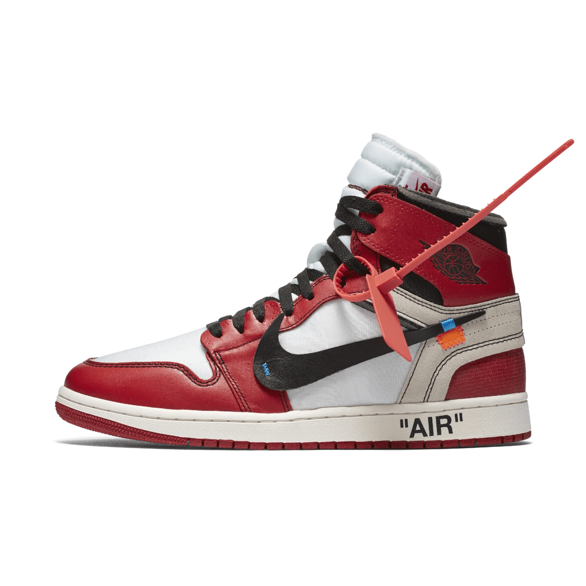
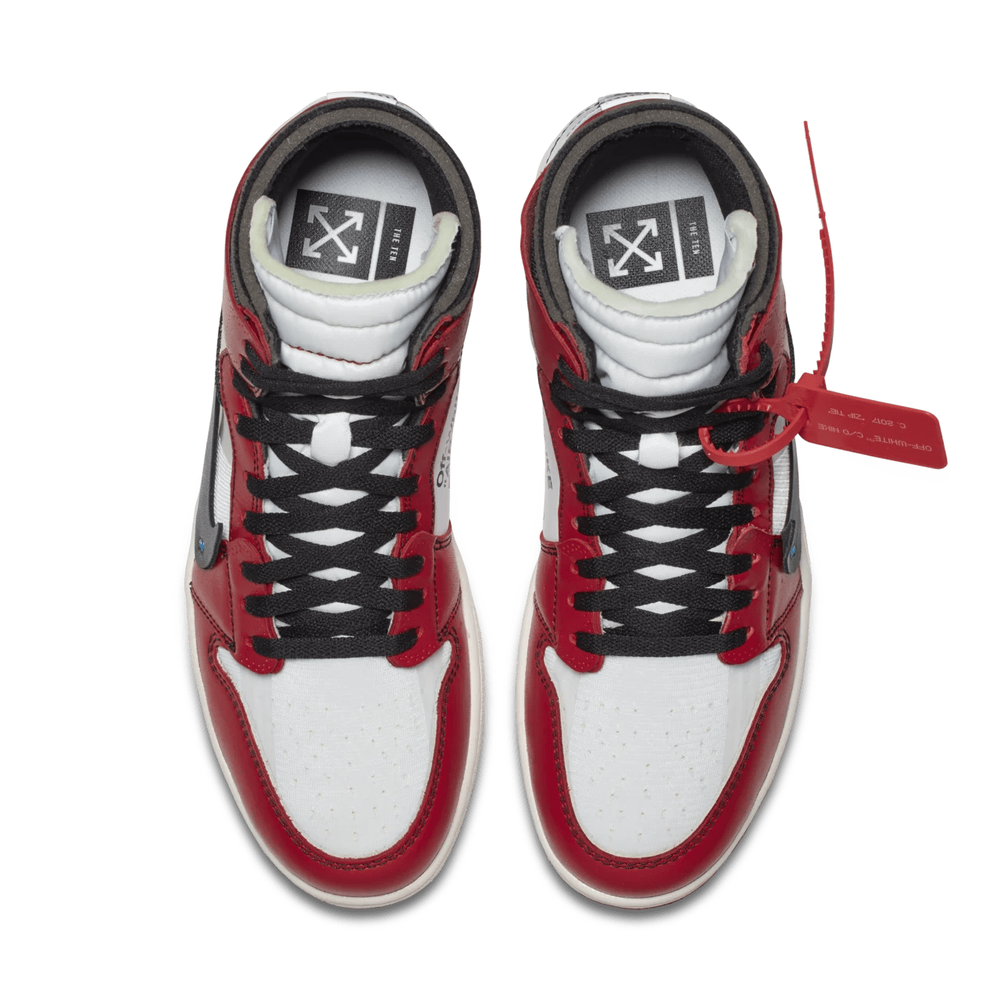
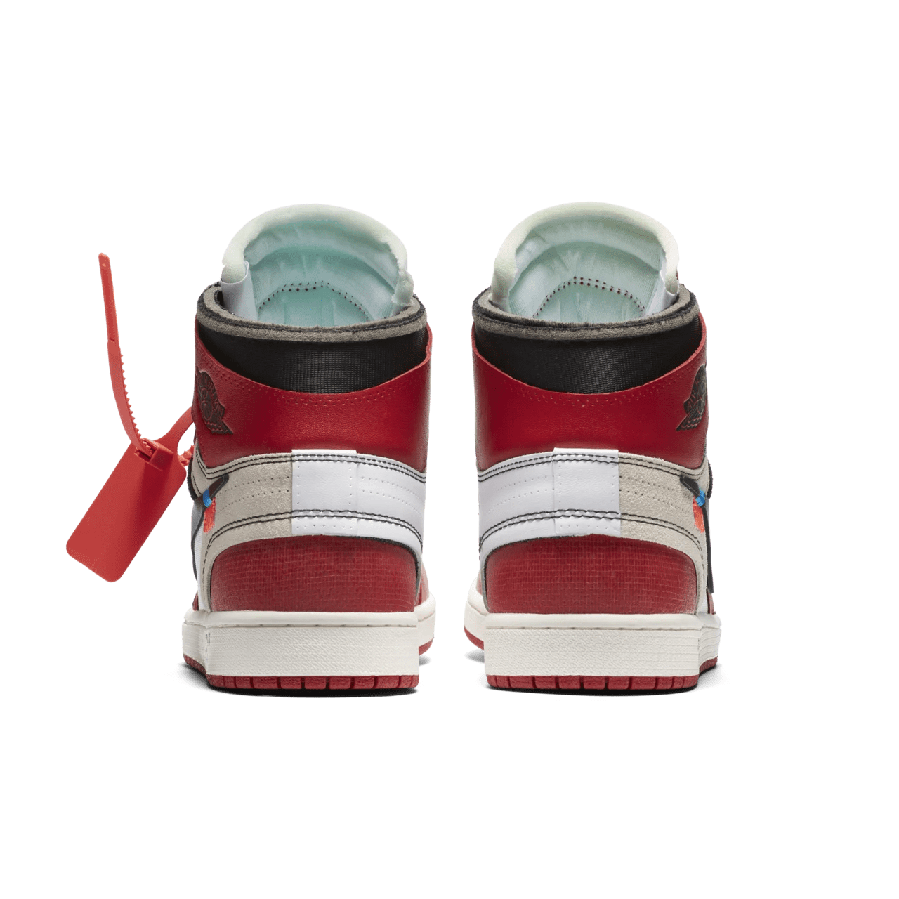

The Air Jordan 1 "Off-White" is a groundbreaking collaboration between Nike and renowned designer Virgil Abloh, founder of the luxury streetwear brand Off-White. Released in 2017 as part of the "The Ten" collection, this sneaker reimagines the classic Air Jordan 1 silhouette, pushing the boundaries of sneaker design and culture.
Abloh's distinctive deconstructed style is evident in the "Off-White" Jordan 1, featuring exposed stitching, a transparent Swoosh, and unique labeling on the shoe's exterior. The use of bright colors, particularly the vibrant orange accents, adds a bold contrast to the predominantly white leather upper. This innovative approach not only celebrates the history of the Jordan brand but also infuses it with a contemporary, avant-garde flair.
Beyond its striking aesthetics, the Air Jordan 1 "Off-White" has made a significant impact on sneaker culture. The collaboration highlights the intersection of high fashion and streetwear, appealing to both sneaker enthusiasts and fashion aficionados. Its limited availability and high demand have contributed to its status as a highly sought-after collectible, often commanding exorbitant resale prices.
The "Off-White" Jordan 1 symbolizes more than just a sneaker; it represents a cultural movement that challenges traditional design norms and embraces individuality. By merging heritage with innovation, Virgil Abloh has left an indelible mark on the sneaker industry, and the Air Jordan 1 "Off-White" stands as a testament to his vision and influence.
  